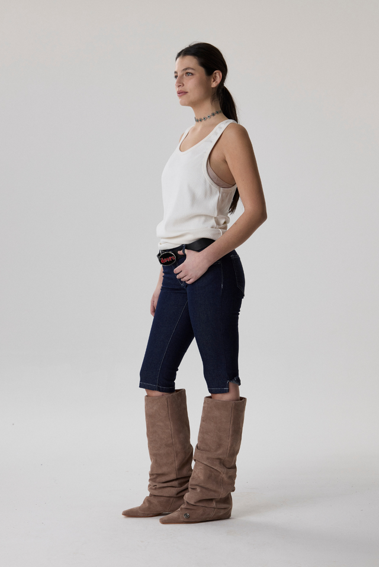
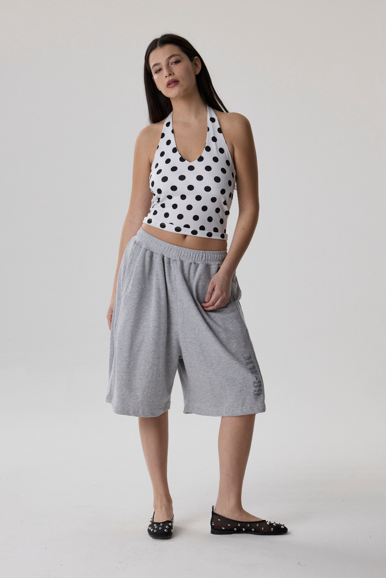
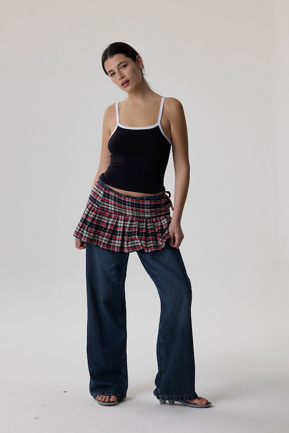
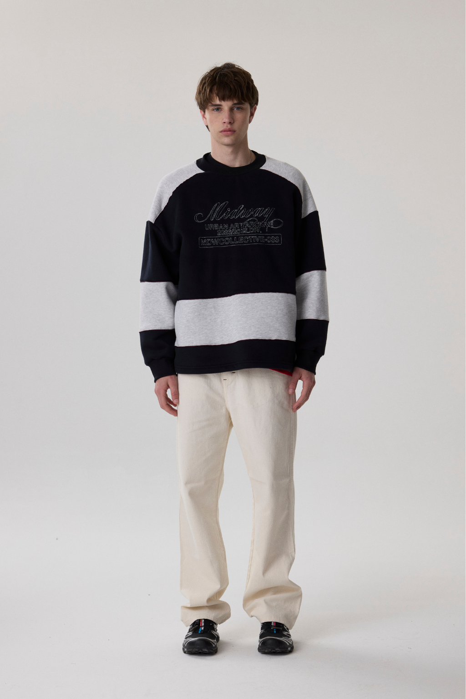
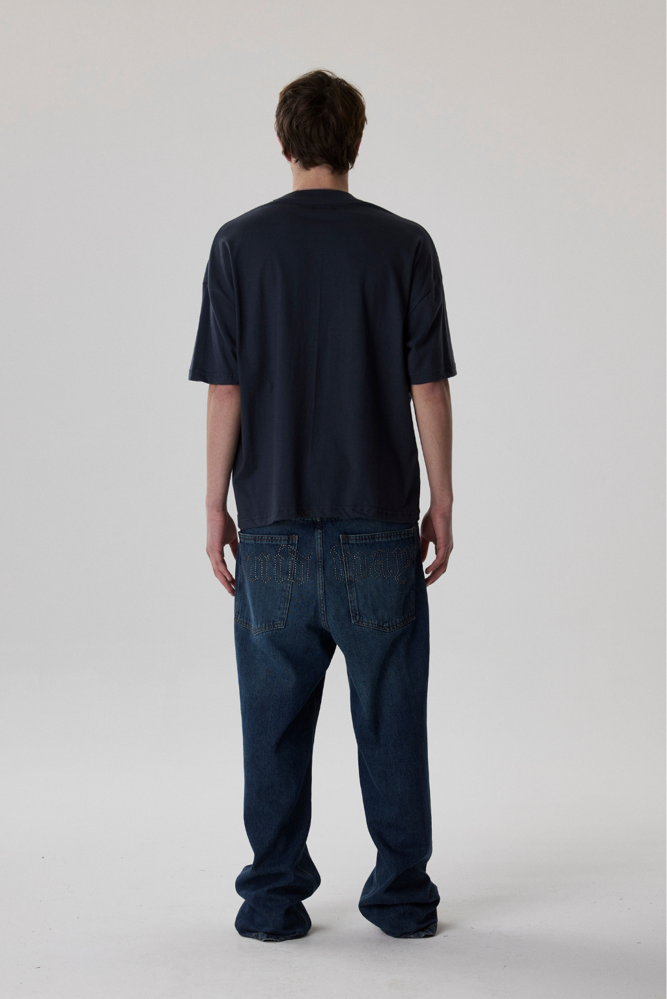
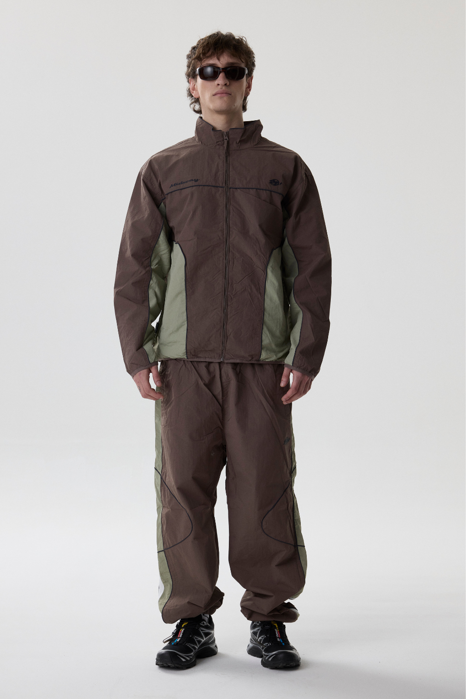

STREETWEAR · FADWAY
Vestí tu forma de ser.
Bienvenidos a FadWay, una marca de ropa urbana pensada para jóvenes que buscan expresar su personalidad a través de la moda. Nuestro objetivo es combinar comodidad, estilo y tendencias actuales en cada prenda.
Sobre FadWay
Nuestra propuesta
FadWay se inspira en el streetwear y en las tendencias urbanas. Buscamos ofrecer ropa moderna y versátil para el día a día, permitiendo que cada persona encuentre su propio estilo.
La marca está dirigida principalmente a adolescentes y jóvenes interesados en la moda, las redes sociales y las nuevas tendencias.
Galería
Descubrí algunas prendas y estilos que inspiran a FadWay.


Pollera tableada
Un clásico que suma movimiento y un toque diferente a los conjuntos urbanos.
Ver más


Datos destacados
- El streetwear nació de la cultura del skate y el hip hop.
- La moda urbana combina comodidad y estilo.
- Las redes sociales ayudan a difundir nuevas tendencias de moda.
Conocé más sobre las tendencias urbanas visitando Vogue .